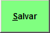

A Denominação Comum Brasileira abreviada como DCB é uma nomenclatura oficial em língua portuguesa de fármacos
ou princípios ativos que foram aprovadas pela Anvisa e são utilizados no Brasil, mais conhecidas como
classificação de receita A1, A2, B1, B2, etc... Constam aproximadamente 11.000 itens na lista.
+Qual o procedimento para cadastrar uma tabela DCB?
No sistema:
- Clique no ícone

- Informe todos os dados pertinentes a tabela DCB e clique em

para salvar os dados no sistema.
OBS.: As informações sobre cada campo estão no final da página.
+Como alterar os dados de uma tabela DCB?
Selecione o DBC em questão, faça as alterações desejadas e tecle ENTER até a próxima linha para salvar.
+É possível excluir uma tabela DCB?
Sim, mas deve-se atentar aos seguintes detalhes:
- Se existirem produtos vinculados a esta tabela DCB, a exclusão não será permitida.
+Tela de cadastro da tabela DCB:
+Descrição dos campos da tabela DCB:
- Código DCB: Informe o código da substância na tabela DCB.
- Substância: Informe o nome da substância.
- Família: Informe a família do produto. (Ex.: A1, A2, B1, B2, C1, C2).
- C.A.S: Informe o número CAS ou registro CAS do produto classificado no CAS Registry
(banco de dados de registro de substâncias).
- Posição: Não é obrigatório.